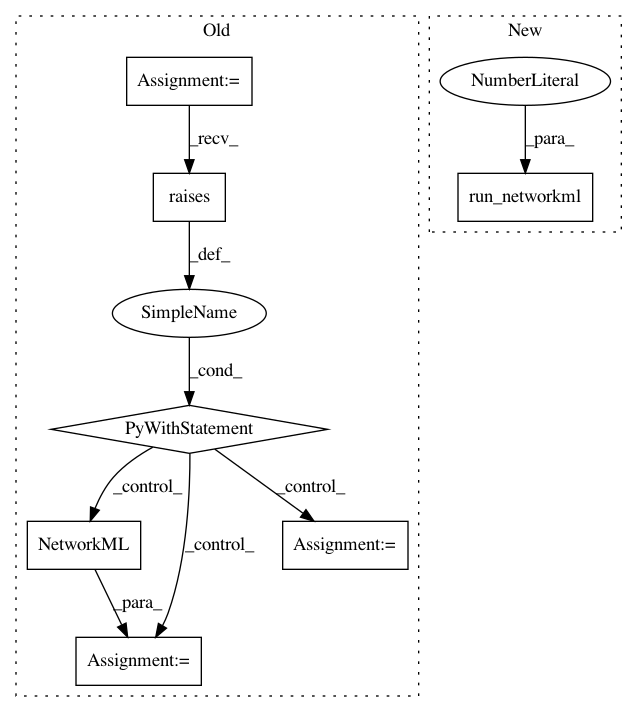

e2cc47ffb0c4b196582719fc33f43d6e938f3f20,tests/test_networkml.py,,test_networkml_train_onelayer,#,34
Before Change
def test_networkml_train_onelayer():
sys.argv = ["bin/networkml", "-p", "tests/", "-o", "train"]
with pytest.raises(SystemExit) as pytest_wrapped_e:
netml = NetworkML()
assert pytest_wrapped_e.type == SystemExit
assert pytest_wrapped_e.value.code == 1
After Change
def test_networkml_train_onelayer():
run_networkml(["-p", "tests/", "-o", "train"], expected_code=1)
def test_networkml_train_randomforest():
run_networkml([
In pattern: SUPERPATTERN
Frequency: 3
Non-data size: 7
Instances
Project Name: CyberReboot/NetworkML
Commit Name: e2cc47ffb0c4b196582719fc33f43d6e938f3f20
Time: 2019-12-10
Author: josh@vandervecken.com
File Name: tests/test_networkml.py
Class Name:
Method Name: test_networkml_train_onelayer
Project Name: CyberReboot/NetworkML
Commit Name: e2cc47ffb0c4b196582719fc33f43d6e938f3f20
Time: 2019-12-10
Author: josh@vandervecken.com
File Name: tests/test_networkml.py
Class Name:
Method Name: test_networkml_test_onelayer
Project Name: CyberReboot/NetworkML
Commit Name: e2cc47ffb0c4b196582719fc33f43d6e938f3f20
Time: 2019-12-10
Author: josh@vandervecken.com
File Name: tests/test_networkml.py
Class Name:
Method Name: test_networkml_train_randomforest